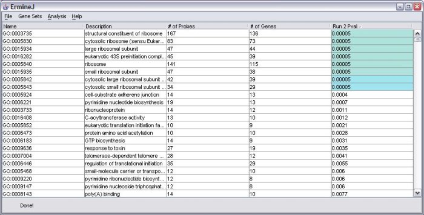

The values are not incorrect, but could be confusing. This is due to a decision we made in the design of the user interface.
The "# of probes" and "# of genes" columns show how many probe and genes are on the array design , not necessarily the number represented in your data.
That is, if you have pre-filtered your input gene scores or your data (for correlation analysis), not all the genes on the array design are in your data set. For example, if you use the Affymetrix HG-U95A array, which has about 12,500 probe (sets), but filtered out ones you deemed "not expressed", you might only have 7000. This is going to affect the sizes of the gene categories represented.
To display this, we would have to adjust the values in those columns to reflect the actual situation in your data. This would be fine if we only had one analysis to show. However, because we allow you to display multiple analyses, potentially from multiple data sets which have been filtered differently, there might not be a single "correct" value to show. Therefore we always just show the value for the full array design.
You can always get the "correct" number by holding your mouse over the p value value; a tool-tip will appear which shows the actual values used for that gene set, for that particular run. When you save a run to a file, the values for the number of probes and genes are the ones used for your particular data. (Other types of work-arounds could be envisioned, which we are considering for a future version of the software)
